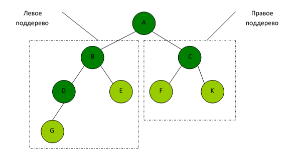
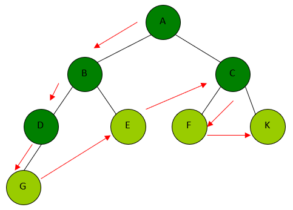
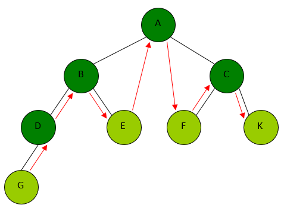
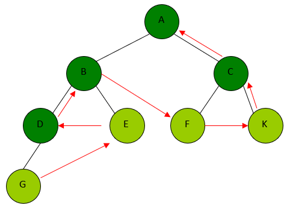
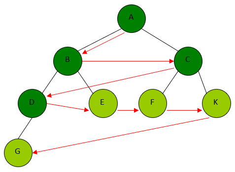

Во многих задачах, связанных с деревьями, требуется осуществить систематический просмотр всех его узлов в определенном порядке. Такой просмотр называется прохождением или обходом дерева.
Обход деревьев – последовательная обработка (просмотр, изменение и т.п.) всех узлов дерева, при котором каждый узел обрабатывается строго один раз. При этом получается линейная расстановка узлов дерева.
В зависимости от траекторий выделяют два типа обхода:
Горизонтальный обход подразумевает обход дерева по уровням – вначале обрабатываются все узлы текущего уровня, после чего осуществляется переход на нижний уровень.
При вертикальном обходе порядок обработки текущего узла и узлов его правого и левого поддеревьев варьирует, и по этому признаку выделяют три варианта вертикального обхода:
Пусть имеем дерево, где A — корень, есть левое и правое поддеревья.

1. Обход дерева в прямом порядке (нисходящий обход)
Нисходящий или прямой обход дерева выглядит следующим образом: корень - левое поддерево - правое поддерево.
Наглядное представление прямого обхода:

Для дерева, изображённого на рисунке выше, нисходящий обход представляет собой последовательность вершин: A-B-D-G-E-C-F-K
void treeprint(tnode *tree) {
if (tree!=NULL) { //Пока не встретится пустой узел
cout << tree->field; //Отображаем корень дерева
treeprint(tree->left); //Рекурсивная функция для левого поддерева
treeprint(tree->right); //Рекурсивная функция для правого поддерева
}
}
2. Обход дерева в симметричном порядке (смешанный обход).
Смешанный обход осуществляется по схеме: левое поддерево – корень – правое поддерево.
Наглядное представление смешанного обхода:

Для дерева, изображённого на рисунке выше, смешанный обход представляет последовательность вершин: G-D-B-E-A-F-C-K
void treeprint(tnode *tree) {
if (tree!=NULL) { //Пока не встретится пустой узел
treeprint(tree->left); //Рекурсивная функция для левого поддерева
cout << tree->field; //Отображаем корень дерева
treeprint(tree->right); //Рекурсивная функция для правого поддерева
}
}
3. Обход дерева в обратном порядке (восходящий обход).
Восходящий обход осуществляется по схеме: левое поддерево - правое поддерево – корень.
Наглядное представление восходящего обхода:

Для дерева, изображённого на рисунке выше, нисходящий обход представляет собой последовательность вершин: G-E-D-B-F-K-C-A
void treeprint(tnode *tree) {
if (tree!=NULL) { //Пока не встретится пустой узел
treeprint(tree->left); //Рекурсивная функция для левого поддерева
treeprint(tree->right); //Рекурсивная функция для правого поддерева
cout << tree->field; //Отображаем корень дерева
}
}
4. Обход дерева в ширину.
Рекурсия удобна при обходе деревьев, однако ей нельзя осуществить горизонтальный обход дерева. В этом случае, а так же при обеспокоенности перегрузкой программного стека, следует применять итерационный подход.
При обходе в ширину узлы посещаются уровень за уровнем(N-й уровень дерева - множество узлов с высотой N). Каждый уровень обходится слева направо.
Наглядное обхода в ширину:

Для дерева, изображённого на рисунке выше, обход в ширину представляет последовательность вершин: A-B-C-D-E-F-K-G
Заметим, что перечисление узлов происходит в порядке удаления от корня, что делает поиск в ширину удобным, например, для поиска узла дерева со значением k, наиболее близкого к корню, и т.д.
Для реализации используется структура queue – очередь с методами:
void treeprint(tnode *root) {
q.enqueue(root); // корень в очередь
while (! q.empty)
{
der = q.dequeue();
visit der; // посетить der
if (! der.left.empty) // der.left - левое поддерево
q.enqueue(der.left);
if (! der.right.empty) // der.right - правое поддерево
q.enqueue(der.right);
}
}